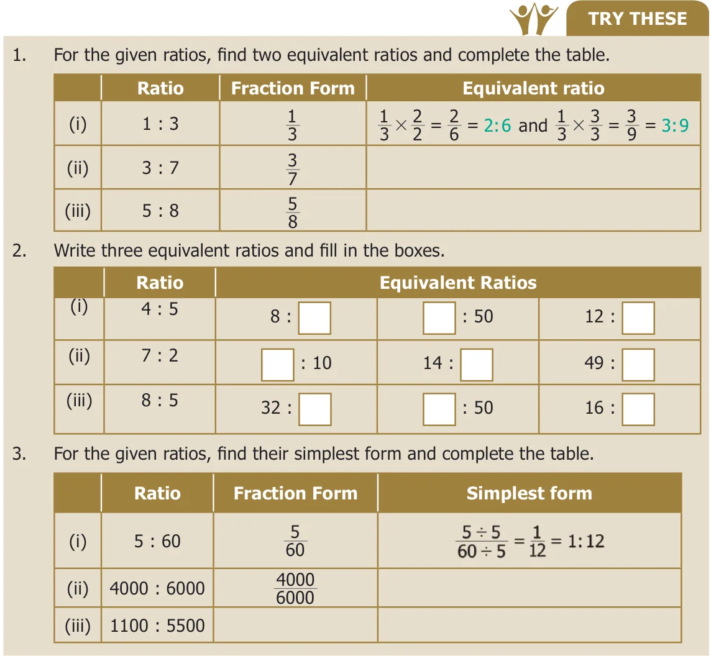
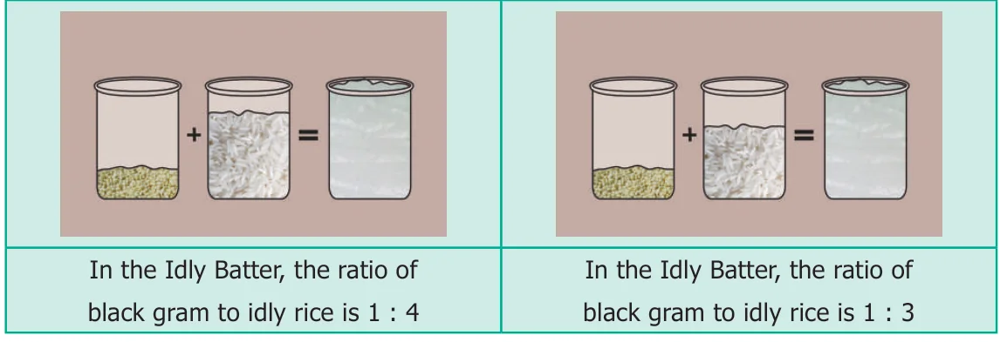
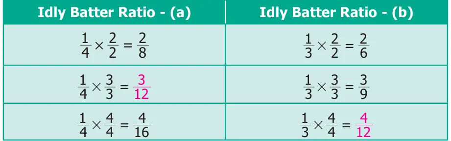
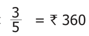

We can get equivalent ratios by multiplying or dividing the numerator and denominator by a common number. This is clear from the following example. Let us find the ratio between breadth and length of the following rectangles given below.
- Ratio of breadth to length of rectangle A is 1 : 2 (already in simplest form)
- Ratio of breadth to length of rectangle B is 2 : 4 (simplest form is 1 : 2)
- Ratio of breadth to length of rectangle C is 4 : 8 (simplest form is 1 : 2)
- Thus, the ratios of breadth and length of rectangles A, B and C are said to be equivalent ratios.
- That is, the ratios 1 : \(2 = 2\) : \(4 = 4\) : 8 are equivalent.

3.2.6 Comparison of Ratios
Consider the following situations.
Situation 1

Can you find which ratio is greater in Fig. 3.2?
Express ratios as a fraction and then find the equivalent fractions, until the denominators are the same, and compare the fractions with common denominators. This is done as follows :

Comparing the equivalent ratios, \(\frac{4}{12}\)
\(\frac{3}{12}\) , we can conclude that 1 : 3 is greater than 1 : 4
Situation 2
Let us consider another situation. For example, if a thread of 5 m is cut at 3 m, then the length of two pieces are 3 m and 2 m and the ratio of the two pieces is 3 : 2. From this we say that, a ratio 'a : b' is said to have a total of 'a+b' parts in it.
Example 3.5
Kumaran has ₹600 and wants to divide it between Vimala and Yazhini in the ratio 2 : 3. Who will get more and how much?
Solution
Divide the whole money into \(2 + 3 = 5\) equal parts then, Vimala gets 2 parts out of 5 parts and Yazhini gets 3 parts out of 5 parts. Amount Vimala gets \(= 600 \times \frac{2}{5} =\) ₹240.
Amount Yazhini gets \(= 600 \times \frac{3}{5} =\) ₹360. Vimala received ₹240 and Yazhini gets ₹360, which is ₹120 more than that of Vimala.

- Fill in the blanks for the given equivalent ratios.
- 3 : \(5 = 9\) : ___ (ii) 4 : \(5 =\) ___ : 10 (iii) 6 : ___ \(= 1\) : 2
- Complete the table.